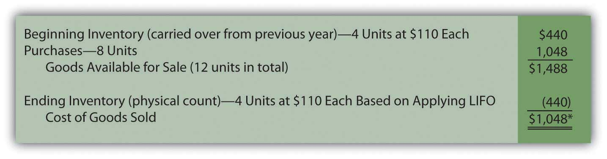
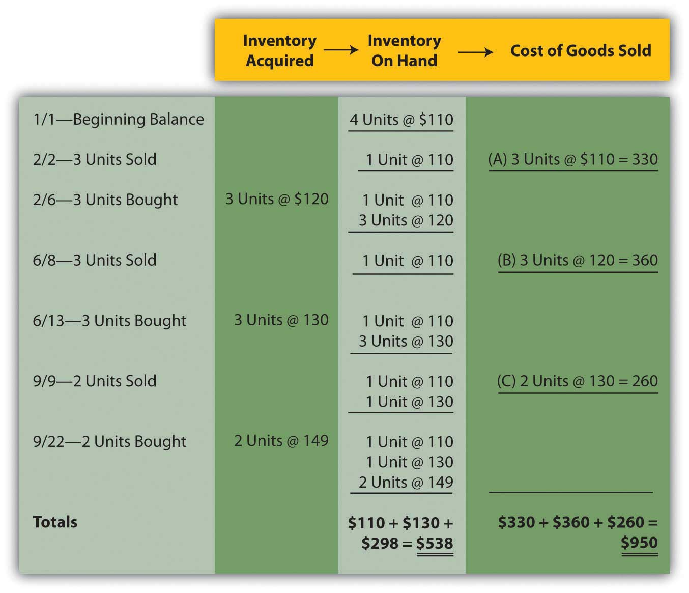
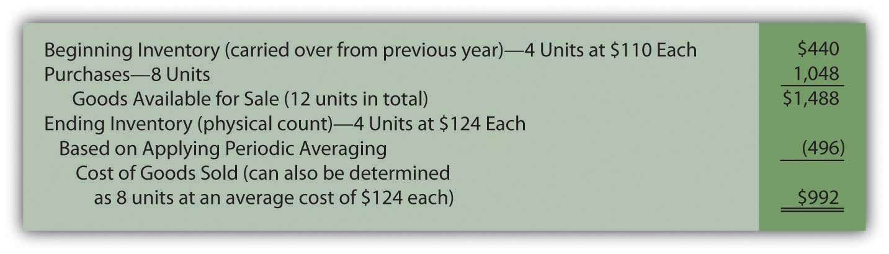
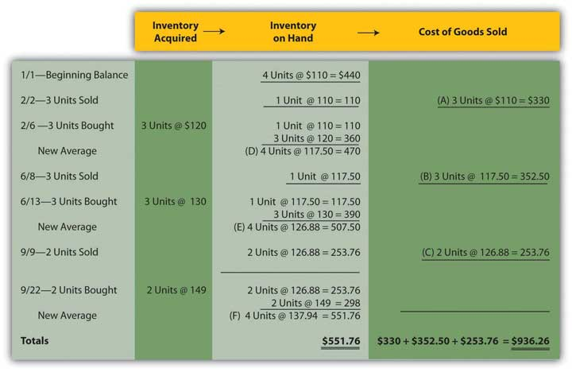
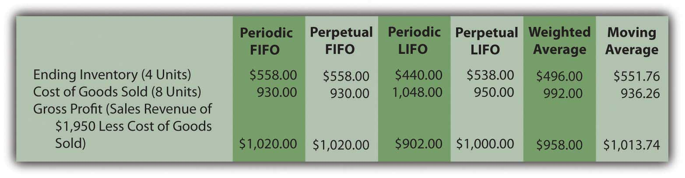

At the end of this section, students should be able to meet the following objectives:
Question: LIFO reverses the FIFO cost flow assumption so that the last costs incurred are the first reclassified to cost of goods sold. How is LIFO applied to the inventory of an actual business? If the Mayberry Home Improvement Store adopted LIFO, how would the reported figures have been affected by this decision?
Answer: Periodic LIFO. In a periodic system, only the computation of the ending inventory is altered by the choice of a cost flow assumption.Because ending inventory for one period becomes the beginning inventory for the next, application of a cost flow assumption does change that figure also. However, the impact is only indirect because the number is simply carried over from the previous period. No current computation of beginning inventory is made based on the cost flow assumption in use. Thus, for this illustration, beginning inventory remains $440 (4 units at $110 each) and the number of units purchased is still eight with a cost of $1,048. The reported figure that changes is the cost of the ending inventory. Four bathtubs remain in stock at the end of the year. According to LIFO, the last costs are transferred to cost of goods sold; only the cost of the first four units remains in ending inventory. That is $110 per unit or $440 in total.
Figure 9.8 Periodic LIFO—Bathtub Model WET-5
*If the number of units bought equals the number of units sold—as seen in this example—the quantity of inventory remains unchanged. In a periodic LIFO system, beginning inventory ($440) is then the same as ending inventory ($440) so that cost of goods sold ($1,048) equals the amount spent during the period to purchase inventory ($1,048). Therefore, during the year, company officials can keep track of gross profit by subtracting purchases from revenues.
Mayberry Home Improvement Store reports gross profit using periodic LIFO of $902 (revenue of $1,950 less cost of goods sold of $1,048).
Note here that the anticipated characteristics of LIFO are present. Ending inventory of $440 is lower than that reported by FIFO ($558). Cost of goods sold ($1,048) is higher than under FIFO ($930) so that the reported gross profit (and, hence, net income) is lower by $118 ($1,020 for FIFO versus $902 for LIFO).
Link to multiple-choice question for practice purposes: http://www.quia.com/quiz/2092905.html
Perpetual LIFO. The mechanical structure for a perpetual LIFO system is the same as that demonstrated for perpetual FIFO except that the most recent costs are moved into cost of goods sold at the time of each sale (points A, B, and C).
Figure 9.9 Perpetual LIFO—Bathtub Model WET-5
Once again, the last cell in the “inventory on hand” column contains the asset figure to be reported on the balance sheet (a total of $538) while the summation of the “cost of goods sold” column provides the amount to be shown on the income statement ($950).
As can be seen here, periodic and perpetual LIFO do not necessarily produce identical numbers.
periodic LIFO: ending inventory $440 and cost of goods sold $1,048 perpetual LIFO: ending inventory $538 and cost of goods sold $950Periodic and perpetual FIFO always arrive at the same results. In contrast, balances reported by periodic and perpetual LIFO frequently differ. Although the first cost incurred in a period (the cost transferred to expense under FIFO) is the same regardless of the date of sale, this is not true for the last or most recent cost (expensed according to LIFO).
As an illustration, note that two bathtubs were sold on September 9 in this example. Perpetual LIFO immediately determines the cost of this sale and reclassifies the amount. On that date, the cost of the last two units ($130 each) came from the June 13 purchase. That amount is expensed. In contrast, a periodic LIFO system makes that same determination but not until December 31. As viewed from year’s end, the last costs were $149 each. Although these items were bought on September 22, which is after the last sale, they are included in the cost of goods sold for a periodic LIFO system.
Two bathtubs were sold on September 9 but the identity of the specific costs to be transferred depends on the date on which the determination is made. A periodic system views the costs from the perspective of the end of the year, while perpetual does so immediately when a sale is made.
Link to multiple-choice question for practice purposes: http://www.quia.com/quiz/2092891.html
Question: Not surprisingly, averaging follows a path similar to that of the previous examples. Costs are either moved to cost of goods sold at the end of the year (periodic or weighted average) or at the time of each new sale (perpetual or moving average). The only added variable to this process is the calculation of average cost. In the operation of an averaging system, when and how is the average cost of inventory determined?
Answer: Periodic (weighted) average. In the problem being examined here, Mayberry Home Improvement Store eventually held twelve bathtubs. Four of these units were on hand at the start of the year and the other eight were acquired during the period. The beginning inventory cost $440 and the new purchases were bought for a total of $1,048. Thus, these twelve units had a total cost of $1,488 ($440 + $1,048) or $124 per bathtub ($1,488/12 units). When applying a weighted average system, this single average is the basis for both the ending inventory and cost of goods sold to be included in the company’s financial statements. No item actually cost $124 but that average is applied to all units.
Figure 9.10 Periodic (Weighted) Average—Bathtub Model WET-5
Perpetual (moving) average. In this final approach to maintaining and reporting inventory, each time that a company buys inventory at a new price, the average cost is recalculated. Therefore, a moving average system must be programmed to update the average whenever additional merchandise is acquired.
Below, a new average is computed at points D, E, and F. Each time this figure is found by dividing the number of units on hand after the purchase into the total cost of those items. For example, at point D, the company now has four bathtubs. One cost $110 while the other three were acquired for $120 each or $360 in total. Total cost was $470 ($110 + $360) for these four units for a new average of $117.50 ($470/4 units). That average is then used until the next purchase is made. The applicable average at the time of sale is transferred from inventory to cost of goods sold at points A ($110.00), B ($117.50), and C ($126.88) below.
Figure 9.11 Perpetual (Moving) Average—Bathtub Model WET-5
Summary. The six inventory systems shown here for Mayberry Home Improvement Store provide a number of distinct pictures of ending inventory and cost of goods sold. As stated earlier, these numbers are all fairly presented but only in conformity with the specified principles being applied.
Figure 9.12 Six Inventory Systems
Link to multiple-choice question for practice purposes: http://www.quia.com/quiz/2092932.html
Link to multiple-choice question for practice purposes: http://www.quia.com/quiz/2092933.html
A periodic LIFO inventory system begins by computing the cost of ending inventory at the end of a period and then uses that figure to calculate cost of goods sold. Perpetual LIFO also transfers the most recent cost to cost of goods sold but makes that reclassification at the time of each sale. A weighted average inventory system determines a single average for the entire period and applies that to both ending inventory and the cost of goods sold. A moving average system computes a new average cost whenever merchandise is acquired. That figure is then reclassified to cost of goods sold at the time of each sale until the next purchase is made.